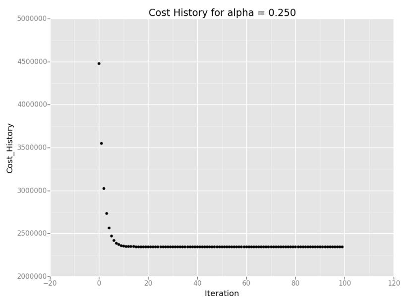
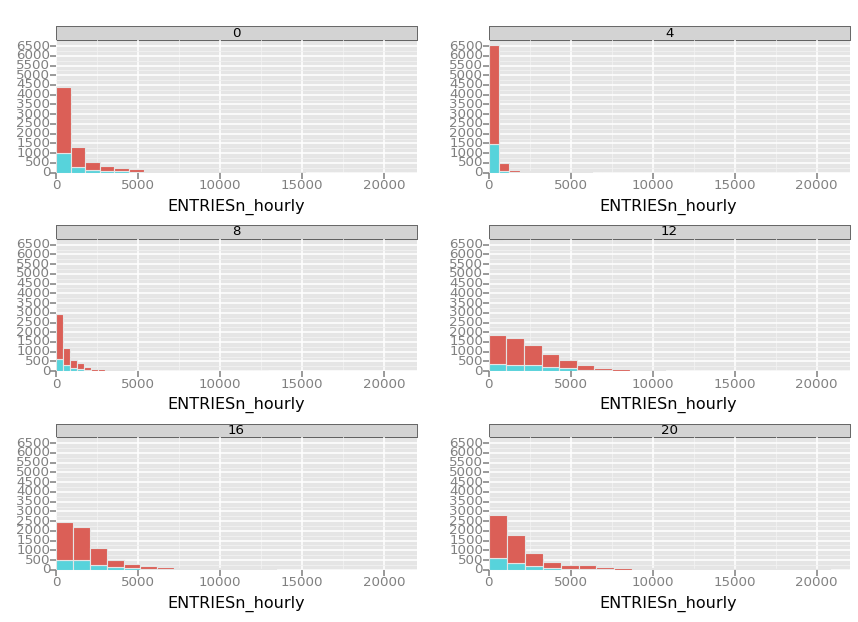
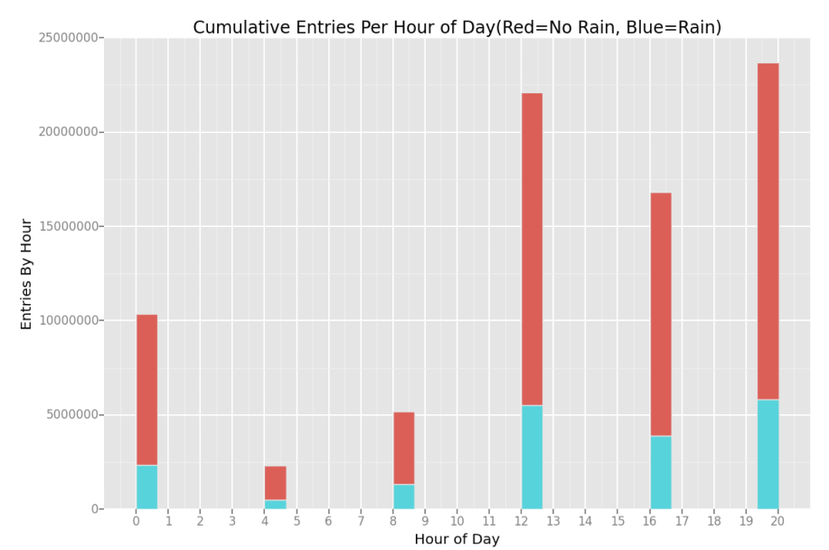
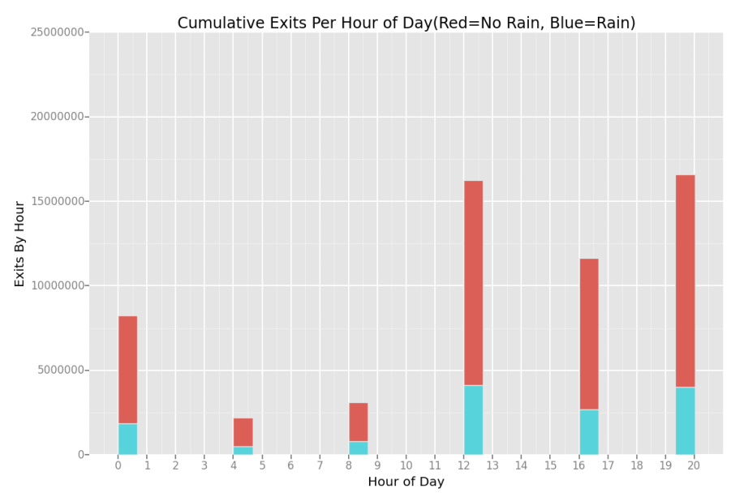

Analyzing the NYC Subway Dataset
Michal Nadolny
In this project, you look at the NYC Subway data and figure out if more people ride the subway when it is raining versus when it is not raining.
This project consists of two parts. In Part 1 of the project, you should have completed the questions in Problem Sets 2, 3, 4, and 5 in the Introduction to Data Science course. This document addresses part 2 of the project. Please use this document as a template and answer the following questions to explain your reasoning and conclusion behind your work in the problem sets. You will attach a document with your answers to these questions as part of your final project submission.
All the problem sets in the Data Science course are now complete, the code for each lesson is submitted within the udacity portal. Also in my github repository I have a ipython notebook where I did additional analysis. If any of them need to be redone or need clarification please let me know. I would recommend using nbviewer to see the notebook on github:http://nbviewer.ipython.org/ My references are listed at the bottom of this document.
To start the project I first took a look at some sample data so I can understand the data structure through reading the csv into a dataframe, then using .head() to take a peek at the structure of the data as well as explored the weather variables in the pdf.
1.1 Which statistical test did you use to analyze the NYC subway data? Did you use a one-tail or a two-tail P value? What is the null hypothesis? What is your p-critical value?
I ran the Mann-Whitney U two-tail test to compare ridership between non rainy and rainy days. My null hypothesis (H0) was there was no significant difference in ridership on days it does not rain or it does rain. My p-critical value is .50
1.2 Why is this statistical test applicable to the dataset? In particular, consider the assumptions that the test is making about the distribution of ridership in the two samples.
The Mann-Whitney U two tail test is applicable to the data set because it has more than 20 values, the data is non-normal, and there are two groups of data, rain and no rain. Also the other t-tests we learned about require around the same number of datapoints, in this case there are 33064 rows with no rain, 9585 with rain which would give inaccurate results if we ran a ttest.
1.3 What results did you get from this statistical test? These should include the following numerical values: p-values, as well as the means for each of the two samples under test.
Initially I ran the test in one line U,p=scipy.stats.mannwhitneyu which gave me a U value of 1845.53943866, but it gave me a nan value for p. I found a manual work around to calculate and I got a p value of 5.48269387142e-06 but this did not seem right as it was more than 1. To mitigate I increased the scale to get a new p value of 0.0230437913962 and a z of -4.54541569645. No Rain Entries Mean: 1845.53943866, Rain Entries Mean: 2028.19603547
1.4 What is the significance and interpretation of these results?
Since p-value<0.50 this means the null hypothesis is rejected. It indicates the number of entries is significantly different on days it does not rain or it does rain. Since the rain entries mean is higher, this shows increased ridership on rainy days, but there are more non rainy days so that cannot be so.
2.1 What approach did you use to compute the coefficients theta and produce prediction for ENTRIESn_hourly in your regression model:
Gradient descent (as implemented in exercise 3.5)
OLS using Statsmodels
Or something different?
To compute the coefficients theta and produce prediction for ENTRIESn_hourly in regression model I used the gradient descent as implemented in exercise 3.5, here is the chart it produced. I also experimented with OLD using Statsmodels.
2.2 What features (input variables) did you use in your model? Did you use any dummy variables as part of your features?
For features I used rain, precipi, hour, and meanwspdi (wind speed mean). I did experiment with some other features by looking at the variables from weather underground: http://www.wunderground.com/weather/api/d/docs?d=resources/phrase-glossary. I also used one dummy variable of UNIT as part of my features.
2.3 Why did you select these features in your model? We are looking for specific reasons that lead you to believe that the selected features will contribute to the predictive power of your model.
I used feature rain because that is the main feature needed to compare ridership, precipi because my intuition told me it depends how much it actually rains. Along side this, I also used hour for the time of day feature because it seemed like it was needed and meanwspdi because as soon as I included it in my model, it drastically improved my R2 value.
2.4 What are the coefficients (or weights) of the non-dummy features in your linear regression model?
The coefficients of the non-dummy features in my linear regression model are [-1117.06687706 -629.70384943 345.02220582 ..., 59.31488759 546.67791522 1034.04094285]
2.5 What is your model’s R2 (coefficients of determination) value?
My R2 value came out to be 0.461500534568 with the gradient descent. While using OLS to compute R2 it was 0.577
2.6 What does this R2 value mean for the goodness of fit for your regression model? Do you think this linear model to predict ridership is appropriate for this dataset, given this R2 value?
R2 value above .20 means it is a good result. Seems OLS is higher and gives this great summary on the data. I think the OLS model is a better predictor giving us about 57% confidence.
OLS Regression Results
==============================================================================
Dep. Variable: EXITSn_hourly R-squared: 0.577
Model: OLS Adj. R-squared: 0.577
Method: Least Squares F-statistic: 1.161e+04
Date: Sun, 18 Jan 2015 Prob (F-statistic): 0.00
Time: 23:36:31 Log-Likelihood: -3.7711e+05
No. Observations: 42649 AIC: 7.542e+05
Df Residuals: 42644 BIC: 7.543e+05
Df Model: 5
===================================================================================
coef std err t P>|t| [95.0% Conf. Int.]
-----------------------------------------------------------------------------------
rain 102.2442 20.861 4.901 0.000 61.356 143.132
precipi -648.1422 336.839 -1.924 0.054 -1308.354 12.069
hour 33.6267 1.092 30.780 0.000 31.485 35.768
meanwspdi 11.7151 1.737 6.744 0.000 8.310 15.120
ENTRIESn_hourly 0.4619 0.003 161.913 0.000 0.456 0.468
==============================================================================
Omnibus: 45332.608 Durbin-Watson: 1.340
Prob(Omnibus): 0.000 Jarque-Bera (JB): 6324254.214
Skew: 5.147 Prob(JB): 0.00
Kurtosis: 61.761 Cond. No. 1.46e+05
==============================================================================
Warnings:
[1] The condition number is large, 1.46e+05. This might indicate that there are
strong multicollinearity or other numerical problems.
Please include two visualizations that show the relationships between two or more variables in the NYC subway data. You should feel free to implement something that we discussed in class (e.g., scatter plots, line plots, or histograms) or attempt to implement something more advanced if you'd like.
Remember to add appropriate titles and axes labels to your plots. Also, please add a short description below each figure commenting on the key insights depicted in the figure.
3.1 One visualization should contain two histograms: one of ENTRIESn_hourly for rainy days and one of ENTRIESn_hourly for non-rainy days.
You can combine the two histograms in a single plot or you can use two separate plots.
If you decide to use to two separate plots for the two histograms, please ensure that the x-axis limits for both of the plots are identical. It is much easier to compare the two in that case.
For the histograms, you should have intervals representing the volume of ridership (value of ENTRIESn_hourly) on the x-axis and the frequency of occurrence on the y-axis. For example, each interval (along the x-axis), the height of the bar for this interval will represent the number of records (rows in our data) that have ENTRIESn_hourly that falls in this interval.
Remember to increase the number of bins in the histogram (by having larger number of bars). The default bin width is not sufficient to capture the variability in the two samples.
Here I am showing hourly entries in histograms, y axis is the count, while the colors separate if it rains or not Red=No Rain, Blue=Rain I also have other graphs in my ipython notebook which I was experimenting with. Here this shows the most ridership when it doesn't rain at 12pm.

3.2 One visualization can be more freeform. Some suggestions are:
Ridership by time-of-day or day-of-week
Which stations have more exits or entries at different times of day
Here is another view of how many people are entering and exiting per hour on rainy and non rainy days. We see most entries are on non rainy days.

Please address the following questions in detail. Your answers should be 1-2 paragraphs long.
4.1 From your analysis and interpretation of the data, do more people ride the NYC subway when it is raining or when it is not raining?
From my analysis and interpretation of the subway turnstiles data more people ride the NYC subway when it is not raining. I first attempted to do welch's ttest but after gathering all the details on the dataset this test was not feasible. The Mann-Whitney U two tail test was a better test to run. Here the test concluded that there was a significant difference between ridership. Further analysis needs to take place to confirm and check other possibility of why this data is the way it is.
4.2 What analyses lead you to this conclusion? You should use results from both your statistical tests and your linear regression to support your analysis.
A combination of Mann-Whitney U test, linear regression, and OLS stats helped me to make my conclusion. Plotting the data on a histogram has helped a lot to see the actual numbers. The use of colors to analyze rain was a good indicator of rain vs no rain. While No Rain Entries Mean was 1845.53943866 and Rain Entries Mean was 2028.19603547, the count was 33,064 to 9,585 respectively. These number are just more evidence to show more people ride when it doesn't rain.
Please address the following questions in detail. Your answers should be 1-2 paragraphs long.
5.1 Please discuss potential shortcomings of the methods of your analysis, including:
Dataset,
Linear regression model,
Statistical test.
In my analysis I found that the precipi variable made more sense to analyze on than the rain variable because it showed the exact precipitation inches at the time and location. The rain variable only indicated 1 if it rained at any point in the day. The data rows accounted for 5 different time intervals throughout the day. Ridership can vary based on if it is raining at the time in the day, not just that day overall.
Adding in more variables such as basketball or baseball games will increase ridership, so there is a lot more to take into consideration when answering the general question of does ridership increase. Another really big though is if there is any power outages or delays due to the rain. If that is the case ridership during the rain would decrease because of limited service.
5.2 (Optional) Do you have any other insight about the dataset that you would like to share with us?
I think to truly test out the powers of analysis in python having 24 hour turnstiles data might have been more useful for this project. Then comparing the ridership across the all the hours would have been a fun adventure.
http://blog.yhathq.com/posts/ggplot-for-python.html
https://github.com/upjohnc/udacity
https://github.com/remondo/Udacity-DS101-IntroToDataScience
http://stats.stackexchange.com/questions/116315/problem-with-mann-whitney-u-test-in-scipy
http://docs.scipy.org/doc/numpy/reference/generated/numpy.mean.html
http://docs.scipy.org/doc/numpy/reference/generated/numpy.sum.html
http://statsmodels.sourceforge.net/devel/generated/statsmodels.regression.linear_model.OLS.html
http://en.wikipedia.org/wiki/Ordinary_least_squares
http://en.wikipedia.org/w/index.php?title=Linear_least_squares_(mathematics)
http://en.wikipedia.org/wiki/Polynomial_regression